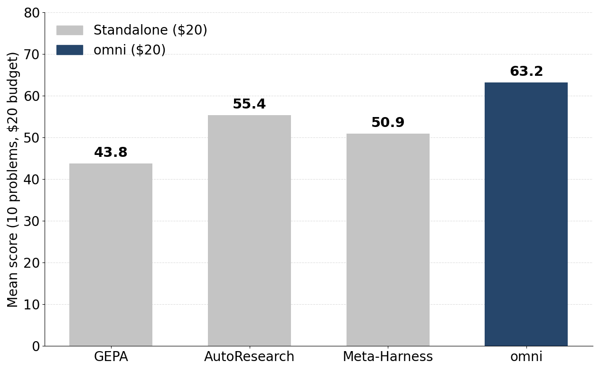
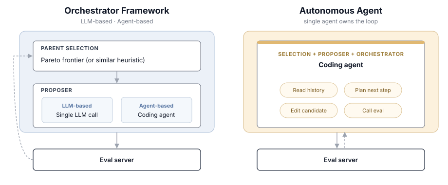
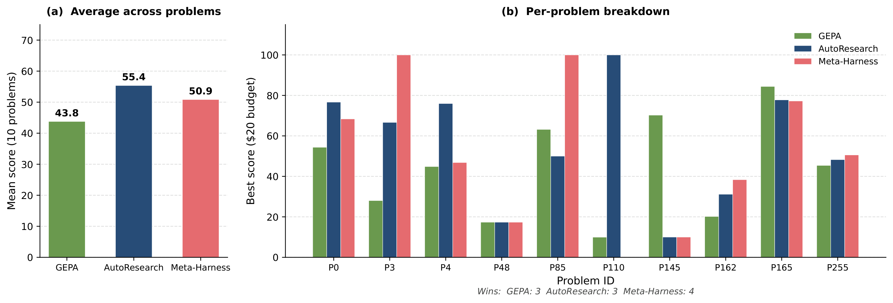
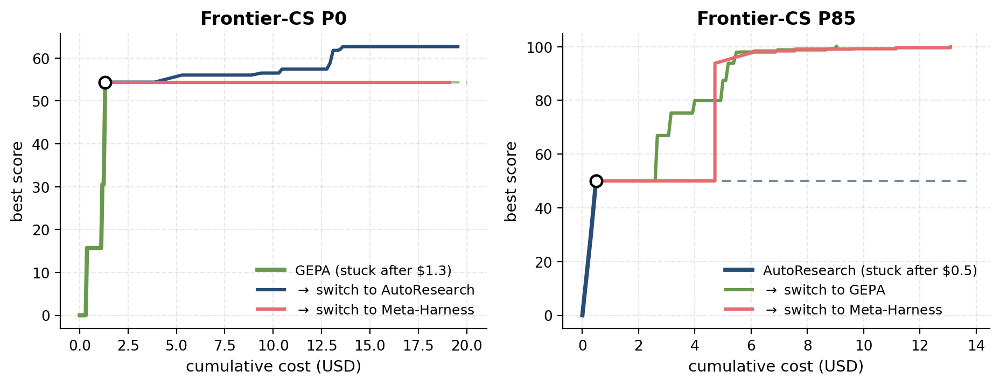
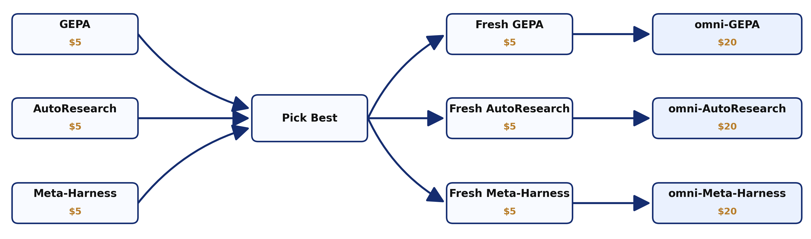

optimize_anything Goes omni : Pluggable Engines and Composable Optimizer Pipelines¶
TL;DR. optimize_anything is now engine-pluggable and pipeline-composable: one argument (engine=) dispatches the same optimization task to any supported engine, such as GEPA, AutoResearch, or Meta-Harness, and the engines compose into multi-stage pipelines as well. Using Terrarium, our new evaluation framework that runs every optimizer to a curated set of task with a matched budget, we find that no single optimizer dominates on Frontier-CS, but the meta-optimizer omni beats every standalone optimizer under a matched $20 budget.

When we introduced optimize_anything, the premise was simple: if your artifact is describable as text and its quality can be measured, you can optimize it. You write down the artifact and a function that scores it, and GEPA's reflective-mutation loop optimizes it.
But GEPA's reflective proposer is just one way to run the optimization loop. A growing set of systems share a similar shape with a candidate string, a black-box scoring function, and an LLM-driven search loop. Some delegate the entire loop to an autonomous coding agent (e.g., AutoResearch). Some keep an external framework in charge of loop orchestration and let an agent mutate one candidate at a time (e.g., Meta-Harness). Each is strong on some problems and weak on others, and we don't have a good way to tell which will win. Until now, switching between them meant porting your task into a new framework.
This release changes that in two ways. First, optimize_anything now can dispatch the same call to any of these optimizers. You pick one with the engine argument, or plug in your own. Second, the optimizers compose. You can run several engines in any order, keep the best, and continue from there. We also release an example meta-optimizer omni that runs all three engines in parallel and leverages the best result.
Different Optimizers¶
These systems fall into three families. All fit the same (candidate, score, loop) contract, differing only in who proposes the next candidate and who owns the loop:

optimize_anything now ships three engines, one per family:
engine= |
Family | How it proposes |
|---|---|---|
"gepa" |
LLM-based optimizer | A single reflective LLM call mutates a parent selected from a Pareto frontier. |
"autoresearch" |
Autonomous agent | A long-horizon Claude Code session (AutoResearch-style) owns the entire loop: selection, proposal, and evaluation. |
"meta_harness" |
Agent-based | A coding-agent proposer mutates candidates while the framework owns the outer loop and parent selection (Meta-Harness). |
You pick the engine with one argument. The task and the evaluate function stay the same:
from gepa.optimize_anything import optimize_anything, OptimizeAnythingConfig
def evaluate(candidate: str) -> tuple[float, dict]:
score, feedback = run_judge(candidate)
return score, {"Feedback": feedback}
seed = open("seed_solution.py").read()
task = dict(
evaluator=evaluate,
objective="Maximize the score for this competitive-programming problem.",
background="A sandboxed judge runs hidden tests and returns a 0–100 score.",
)
# Same task, same evaluator, swap only the engine:
result_gepa = optimize_anything(seed, **task,
config=OptimizeAnythingConfig(engine="gepa", ))
result_autoresearch = optimize_anything(seed, **task,
config=OptimizeAnythingConfig(engine="autoresearch",))
result_meta_harness = optimize_anything(seed, **task,
config=OptimizeAnythingConfig(engine="meta_harness",))
The evaluate function is polymorphic: (candidate) -> (score, info) for single-task problems, or (candidate, example) -> (score, info) when you also pass dataset / valset examples. The returned info dict is handed to the proposer as Actionable Side Information (ASI): the feedback an engine uses to decide what to change next.
Why one optimizer is not enough¶
To decide which engine to reach for, we ran a controlled study with Terrarium, holding the task, budget, model (Claude Sonnet 4.6, medium thinking), and evaluation server fixed, and varying only the optimizer. The most basic question a practitioner asks is: which optimizer should I use? On Frontier-CS, a suite of open-ended, verifiable competitive-programming problems where each candidate is a full program scored by a hidden-test judge, the answer is uncomfortable.

All three optimizers far outscore a zero-shot baseline. A single LLM call to the same model scores just 7.72 on average, versus 43.8–55.4 for the optimizers, so some optimizer is clearly essential. But which one? AutoResearch has the best average, but the per-problem numbers undercut that average: each optimizer is the best on about a third of the problems, and we couldn't find a way to predict the winner from the problem itself. "Pick the right optimizer for the task" isn't a usable answer when you can't tell which one is right.
Optimizers plateau, but a fresh optimizer may break through!¶
There's a second effect. Given enough budget, every optimizer makes most of its gains early and then plateaus; the rest of the budget makes little difference. So we asked: is that tail of budget wasted, or can a different optimizer, handed the stalled candidate, break the plateau?
It usually can.

The plateau one optimizer reaches is rarely the best the budget can buy: a different optimizer, seeded from the stuck candidate, usually keeps making progress. Which one helps varies, too — on P0, AutoResearch breaks through while Meta-Harness stays put. Both findings point the same way: rather than bet the whole budget on one optimizer, explore with several and continue from the best.
omni: composing optimizers into a meta-optimizer¶
These observations point to a design rather than a single winner. omni is a meta-optimizer that puts both findings to work under one budget:

Phase 1 starts the slow part of the search from a better candidate than any single optimizer reaches alone; phase 2 hands that candidate to a fresh optimizer to push past the plateau. In the new API this is a short composition over the same engines: optimize_best_of runs several engines in parallel and keeps the highest-scoring candidate, then a fresh optimizer continues from it:
from gepa.optimize_anything import (
optimize_anything, optimize_best_of, OptimizeAnythingConfig,
)
# Phase 1 ~ explore: run all engines in parallel, keep the best.
explore = optimize_best_of(seed, **task, configs=[
OptimizeAnythingConfig(engine="gepa", max_token_cost=5),
OptimizeAnythingConfig(engine="autoresearch", max_token_cost=5),
OptimizeAnythingConfig(engine="meta_harness", max_token_cost=5),
])
# Phase 2 ~ continue: seed a fresh optimizer from the winner.
# The continuation engine names the variant. This is omni-GEPA.
omni = optimize_anything(
explore.best_candidate, **task,
config=OptimizeAnythingConfig(engine="gepa", max_token_cost=5),
)
omni is just one point in the design space the new API opens up. The same primitives compose other strategies:
optimize_sequential— chain engines; each one's best seeds the next (monotonic, so a regressing stage can't poison a later one).optimize_parallel/optimize_best_of— run engines concurrently; take all results, or just the highest-scoring.optimize_vote— run in parallel, then vote each engine's best once through your evaluator for a fair cross-engine comparison.optimize_adaptive_sequential— give the active engine a bounded slice, watch for a plateau, and automatically switch engines when progress slows down. The "fresh optimizer breaks through the plateau" effect, scheduled for you under one shared budget.
Results: omni beats every standalone optimizer on Frontier-CS¶
We compared each engine run standalone against the corresponding omni variant on Frontier-CS, under a matched $20 budget. The figure at the top of the post shows that the best omni variant outscores every standalone optimizer, and every continuation variant beats its standalone counterpart:
| Optimizer | Standalone | omni |
Improvement |
|---|---|---|---|
| GEPA | 43.8 | 61.8 | +18.0 (+41%) |
| AutoResearch | 55.4 | 63.2 | +7.8 (+14%) |
| Meta-Harness | 50.9 | 59.3 | +8.4 (+16%) |
The largest gain goes to GEPA: standalone GEPA is weaker than both agent-driven baselines, but omni-GEPA overtakes even the strongest standalone optimizer (AutoResearch). And every omni variant beats every standalone optimizer — the weakest variant still scores higher than the best single engine. The reliable win comes from the composition.
Getting started¶
The best way to use optimize_anything is through the skill, gepa-optimize-anything: an instruction bundle that teaches a coding agent to drive the API for you, from picking the optimization mode to writing a feedback-rich evaluator, finding the right budget (it is always recommended to choose your own budget for realistic/production tasks), and avoiding the common pitfalls. In a clone of the repo, Claude Code (or any agent that reads .claude/skills/) discovers it automatically; just ask the agent to optimize something. Elsewhere, install it with /plugin marketplace add gepa-ai/gepa and /plugin install gepa-optimize-anything@gepa (see the Agent Skill guide).
Prefer to wire it up by hand? optimize_anything should be your entry point. Define your evaluator, pick the engine, and go:
from gepa.optimize_anything import optimize_anything, OptimizeAnythingConfig
result = optimize_anything(
"<your artifact>",
evaluator=your_evaluator,
objective="<what good looks like>",
config=OptimizeAnythingConfig(engine="gepa"), # or "autoresearch", "meta_harness"
)
We are releasing both pieces of this work together: the engine-pluggable, pipeline-composable optimize_anything, and Terrarium, the evaluation framework that pins optimizers to a shared task / eval-server / budget contract so they can be compared head-to-head. We'd love community contributions of new engines, tasks, and pipelines.
Appendix: Bringing your own optimizer¶
The three engines we ship are just a starting set. The engine surface is small enough that any LLM-driven search loop fits, and if you have a different proposer — a new reflective template, a different agent scaffold, an evolutionary policy — you drop it in as an engine and everything else in optimize_anything (the pipeline helpers, the eval-server budget, the Terrarium task registry) comes with it for free.
The contract is one class and one line of registration:
from gepa.oa.engine import Result
from gepa.oa.registry import register_engine
class MyEngine:
name = "my_engine"
def __init__(self, config):
# Cross-cutting caps every engine honors:
self.max_token_cost = config.max_token_cost # your proposer's USD budget
self.stop_at_score = config.stop_at_score # early-exit target
# Pop your engine-specific options out of config.engine_config here.
def run(self, task, server) -> Result:
best, best_score = task.seed_candidate or "", float("-inf")
while ...: # your termination logic
candidate = your_proposer(task, best)
score, _ = server.evaluate(candidate) # eval budget is enforced here
if score > best_score:
best, best_score = candidate, score
return Result(best_candidate=best, best_score=best_score)
register_engine("my_engine", MyEngine)
Once registered, users pick your engine exactly like the built-ins — config=OptimizeAnythingConfig(engine="my_engine") — and every composition helper works with it. Running optimize_best_of with MyEngine alongside GEPA and AutoResearch, or slotting it into optimize_adaptive_sequential as an unstuck-the-plateau step, is a one-line configuration change. And the plateau story from earlier is the argument: engines that get stuck where GEPA doesn't (and vice versa) make every composition strictly better.
The built-in best_of_n engine — sample from one LLM call, evaluate, keep the best — is a ~230-line end-to-end reference for how a from-scratch engine reads config.engine_config, honors the two budgets, and streams to eval_log. If you'd like your optimizer to ship with optimize_anything, open a PR against gepa-ai/gepa; we'd love to make it available to every downstream user.